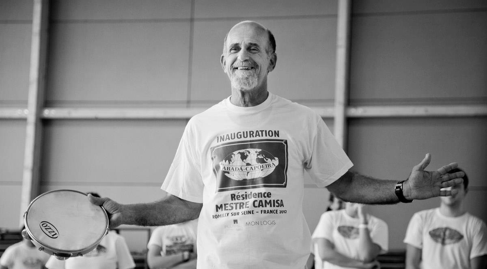

アバダ・カポイエイラ(ABADA-CAPOEIRA)
アバダ・カポエイラ ABADÁ-CAPOEIRA という団体名はAssociação Brasileira de Apoio e Desenvolvimento da Arte-Capoeiraの頭文字をとったもので「ブラジル・カポエイラ芸術後援促進協会」という意味です。当団体はカポエイラを通してブラジル文化の普及を目的にしており、当団体に携わるすべての人々の実践は、ブラジル国内における社会的立場を超えて人々の社会的統合の契機となっています。
そして、ブラジル国内はもとより海外におけるカポエイラの発展にも役立てるように、カポエイラの基礎と可能性を常に追い求め続けています。また、現在ブラジル国内外で数多くの講習会やクラスを展開し、様々なプロジェクトも達成しており、ブラジル国内でも屈指のブラジル文化普及活動を行う団体として認めれらています。ブラジルは全土、そして世界では60カ国以上の人々によって実践され 、その数はおよそ6万人にのぼるといわれています。
[参考HP：ABADÁ-CAPOEIRA公式サイト（本部）]
メストレ・カミーザ(Mestre Camisa)
Pelé da Capoeira”カポエィラ界のペレ”

https://it.wikipedia.org/wiki/Mestre_Camisa
メストレ・カミーザ（Mestre Camisa）は、本名をJose Tadeu Carneiro Cardosoといい、1955年バイーアに生まれました。メストレ・ビンバの生徒だった兄のグラオン・メストレ・カミーザ・ホーシャ（Grão Mestre Camisa Roxa：本名Edvaldo Carneiro e Silva, 1944~2013）と共に、1988年にリオデジャネイロを本拠地にアバダ・カポエイラを設立しました。
メストレ・カミーザは、現代のカポエイラ界を牽引するさまざまな取り組みに尽力しています。カポエイラの技術・形式・理念（哲学）のあくなき探求に加え、例えば①カポエイラの競技化、②新たなゲーム形式の創造、③植樹や資源再利用等の環境保全問題、貧困層の人々の市民権保障への働きかけ、地域活性化などが、メストレ・カミーザが率いるアバダ・カポエイラを通じてなされています。
- カポエイラの競技化
- メストレ・カミーザは、カポエイラの理念（哲学）を損なうと、カポエイリスタの技術は改善しないと考え、カポエイラの理念に基づくカポエイラの競技化を模索していました。1997年にその目的のための足掛かりとして十分であるという確信をもって、第1回の競技大会を開催し、成功が納められました。アバダ・カポエイラにおけるカポエイラ競技の採点は二人でおこなうジョゴに対してなされ、得点はジョゴの点数として計上されます。こうしたアバダ・カポエイラにおける競技化のプロセスでは、政治的関与を一切否定し、外的圧力に関わらない≪カポエイラ芸術の探求≫が重んじられています。また、カポエイラ競技大会では毎回新たな試みがなされており、2013年から新しく設けられた競技カテゴリーの≪マスタークラス≫では、40歳以上のすべての段位のカポエイリスタが参加可能となりました。メストレ・カミーザは常に「カポエイラは人を選ばない」と述べており、いかなる人への門戸も開いており、アバダ・カポエイラの理念とされています。
- 植樹や資源再利用等の環境保全問題、貧困層の人々の市民権保障への働きかけ、地域活性化
- センビCEMBにおける取り組みは、新たなゲーム形式の創造だけにとどまりません。元々、自然における活動が好きだったメストレ・カミーザは、センビCEMBにおいて、環境保全やカポエイラ教育の普及に取り組んできました。センビCEMBのサイトにはアバダ・カポエイラの理念と共に、同施設における取り組みの全容がまとめられています。「アバダ・カポエイラの特徴的な理念の一つとして、自然との結びつきがあります。カポエイラの文化的価値は、その起源にもあるように、（カポエイリスタである）我々は環境や自由、社会統合の問題に対する役割を担っていることにあります。教育分野において教育学的手段としてカポエイラを利用することは、我々地球上の人類の存続のために社会的・生態学的に有益な環境の価値について自覚した人間を養成し、個々人の視野を広げることへとつながるのです。センビCEMBにおいては、若者が不足しているリオデジャネイロ州サンバエチバ地域で、カポエイラ環境と市民権のプロジェクトを実現させています。（具体的には、この地域の）若者たちはカポエイラ芸術を学び、大西洋岸の森林の植林活動をおこない、ゴミのリサイクルと、この地域の若者たちの日常的な権利の組織化などの活動です。彼らは、自身の人生とカポエイラ芸術が十分に発展するように、アバダ・カポエイラのメストレ・カミーザ、先生、上級生によって開かれるカポエイラ教室で（カポエイラの）ユニフォームや指導を無償で受けています。普通に学校へ通学し、自然へ敬意を払うことが、カポエイラ環境プロジェクトに参加するための基本条件です。（このプロジェクトは）立ち上げて5年がたち（2006年当時）、プロジェクトで能力が身についた卒業生11人を既に送り出しています。彼らは地域における活動を発展させ、カポエイラ競技大会やエキシビションの参加を果たしています。」 [（ ）内の補足、訳出はabada-capoeira徳島支部代表professoraによる]これだけではありませんが、こうしたメストレ・カミーザの長年の取組みに対して、2011年5月5日、ミナスジェライス州にあるウベルランジア連邦大学において名誉博士号（Doutor Honoris Causa） が授与されました。ウベルランジア連邦大学の学則 の第2章の名誉称号の項において「第224条 大学委員会は、自己推薦あるいは学内学術委員会によって次の称号を授与することができる。（中略）第3項 名誉博士号：これは文化、科学、哲学、文学の際立った功績、あるいは国民に認知された善行によって、優れた個人へ与えられる」と明記されています。メストレ・カミーザへの博士号授与に関する同大学における見解は次の通りです。「カポエイラは2008年にブラジル歴史芸術遺産研究所（IPHAN）のブラジル無形文化遺産として登録された。ウベルランジア連邦大学化学研究所の教授であり、同大学のアフロ・ブラジル研究センターのコーディネーターであるGuimes Rodrigues Filhoが説明したように、カミーザ師範は人材開発と環境保全を目指したブラジル文化活用とカポエイラ教育の提案に関する様々なアイデアを統合した。この学位証書は、この遺産を保存する役割の学術的な証明である。『カポエイラは基本的に口述伝承であるように、師範たちは（彼らの知恵や理念を伝えるための）知恵の宝庫 といえるのである』」2014年11月にユネスコの無形文化遺産に「カポエイラのホーダ」が登録されましたが、世界へブラジルの誇れる文化として、カポエイラの歩んできた道を含めて伝えられるよう、現在もメストレ・カミーザはさまざまな活動を通じた「カポエイラ芸術」の発展と深化のために、ブラジル国内だけにとどまらず世界各国を渡っています。